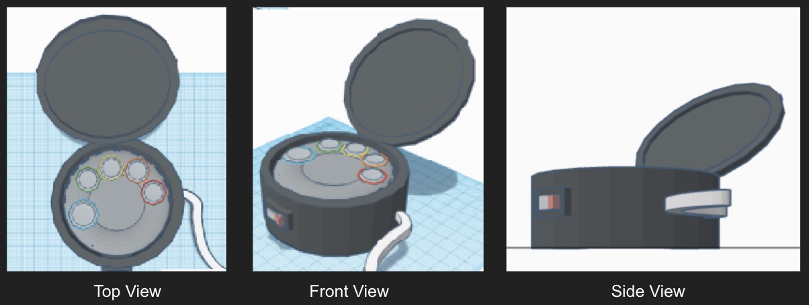
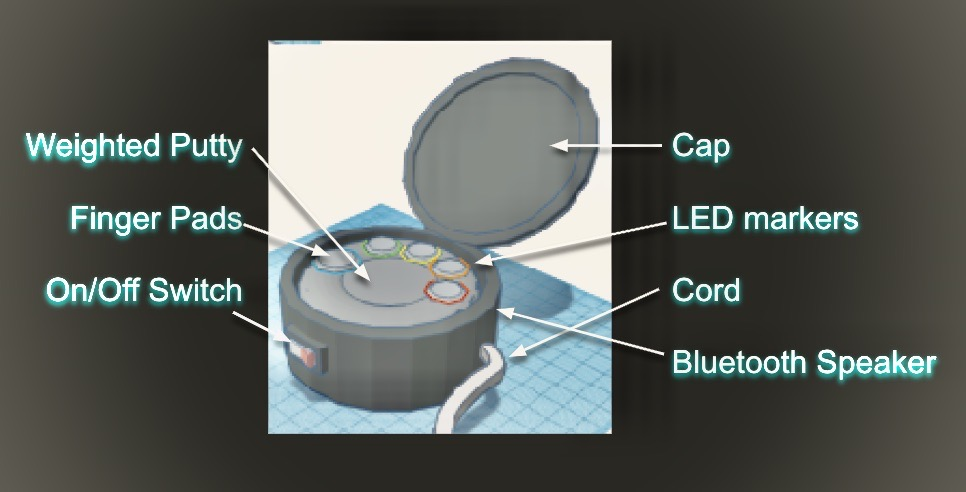
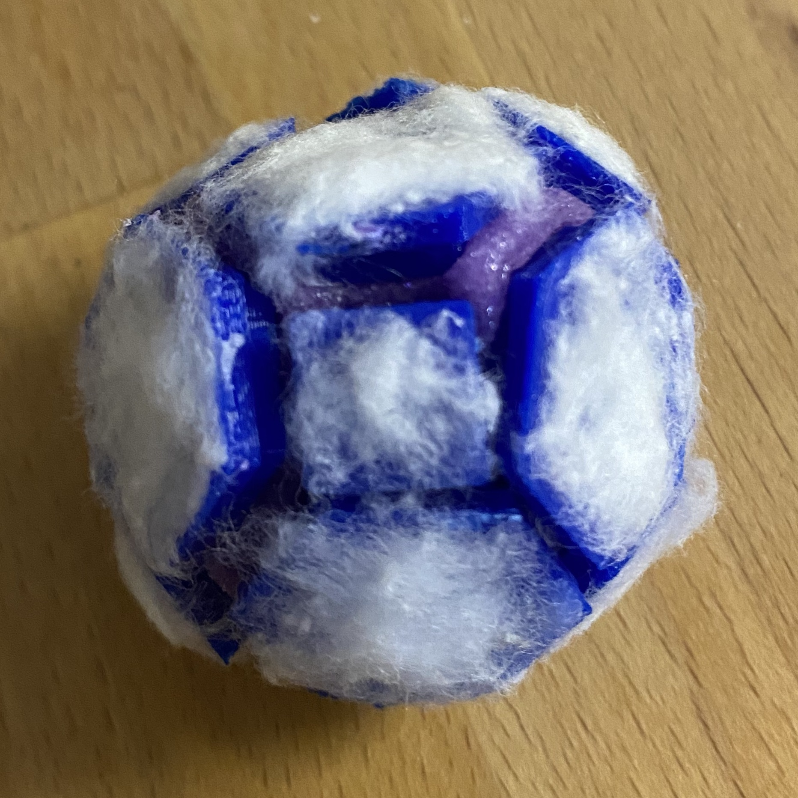
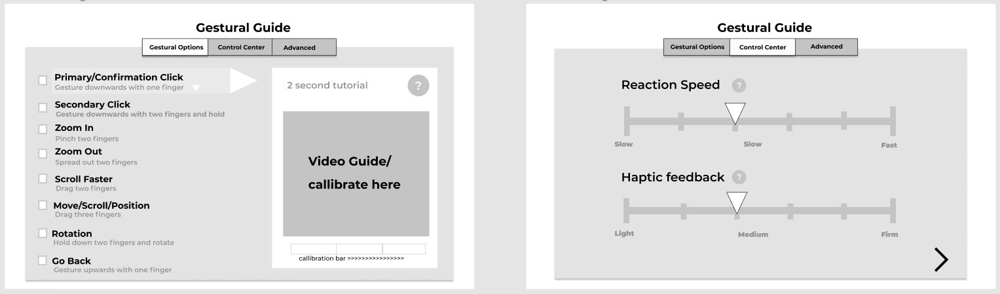
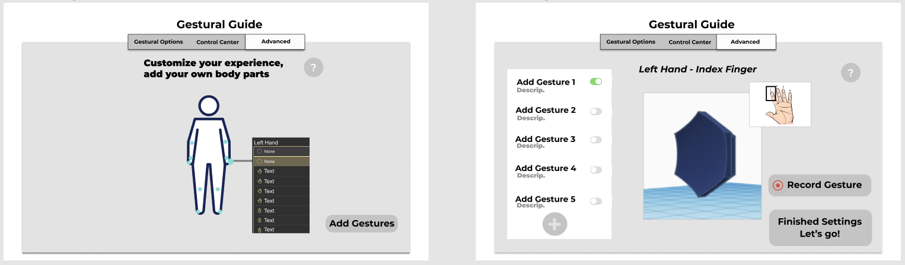

Mark

Project Setup
Mark was created by 4 UXD students. The duration of this project was 8 weeks and meetings were conducted weekly. My role on this project included creating the mockup on TinkerCad, and building the initial 3D prototype. The final prototype was not created due to Convid-19. I also contributed to creating the presentation.
Description of Mark
Mark enables users to navigate their screens using gestures rather than clicks. The gestures can be customized using a digital interface that prompts when Mark is turned on. This navigation tool has finger pads that sense the gestures, a weighted putty to hold the finger pads, and a LED marker to signify activation status. The finger pads can be connected to any part of the body to create the gestures. Originally, this navigation tool was to be in the form of a hexagon however, it transformed into a pad shape in project 2. The shape of Mark was refined to make the experience more smooth and natural.

Project Scope
This project aims to reduce the amount of stress in daily life. Stress often takes place on a computer where we spend most of the day. Thus, a navigation tool became our focus point. My team decided to reshape the typical mouse to provide a more natural and comfortable way of navigating the screen. Through textures and movements, this mouse aims to release stress. The putty provides a squishy texture. The fingers pads come in cotton or silicone texture. Through user interviews, it was found that these textures relieve stress. We also hoped to increase the accessibility of the mouse by enabling any body part to be able to do the gesture without workarounds.
Process
1
Inspiration
After discussing the topic with our team members, we started the inspiration phrase by conducting user interviews. We asked users, what materials relieve stress. A lot of users mentioned soft fuzzy materials and smooth, glass like materials. This feedback was informative in shaping our design.
2
Prototype Mock-Up 1
During the making phrase, we created a model in TinkerCad and 3D printed each piece. Cotton was glued on each piece and slime was made using a slime making kit. A technical challenge was getting all the angles of the shape correct to ensure the pieces line up. It was also a struggle getting the pieces to print concave. The concave part was the biggest side so we placed it facing down, however, this caused the printer to create a layer that covered up the concave hole. After the prototype was built feedback was given from the audience. It was suggested that we label each finger pad and further think about the natural hand movements.

3
Prototype Mock-Up 2
Sketches were made to incorporate the feedback given. The digital interface was also further developed. The sketches were then transferred to Figma (for the graphic user interface) and TinkerCad (for the 3D prototype). The prototype was not presented to the audience for a second round due to Convid-19.


Link to see sketches and the digital interface
Reflection
Communication was a challenge for this project as the concepts were hypothetical and dystopian. While we were discussing ideas between group members, there were a lot of misinterpretations. As a result, from this project, I gained more experience interacting with team members. From this project, I grew as a designer by improving my teamwork skills.
Evaluation
The next steps for this project include building out a physical prototype and doing more usability testing. The usability tests will let us know about usability issues and user satisfaction levels. Learnability is a factor that should specifically be tested. One of the struggles of the product is that this is a big change from a typical mouse so it is important that users are able to learn how to use it. Users may also be reluctant to change.